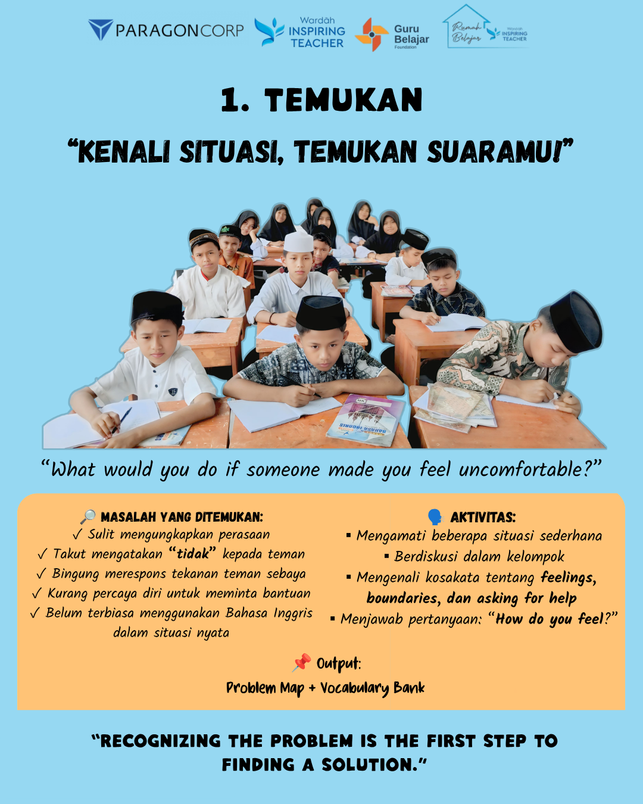
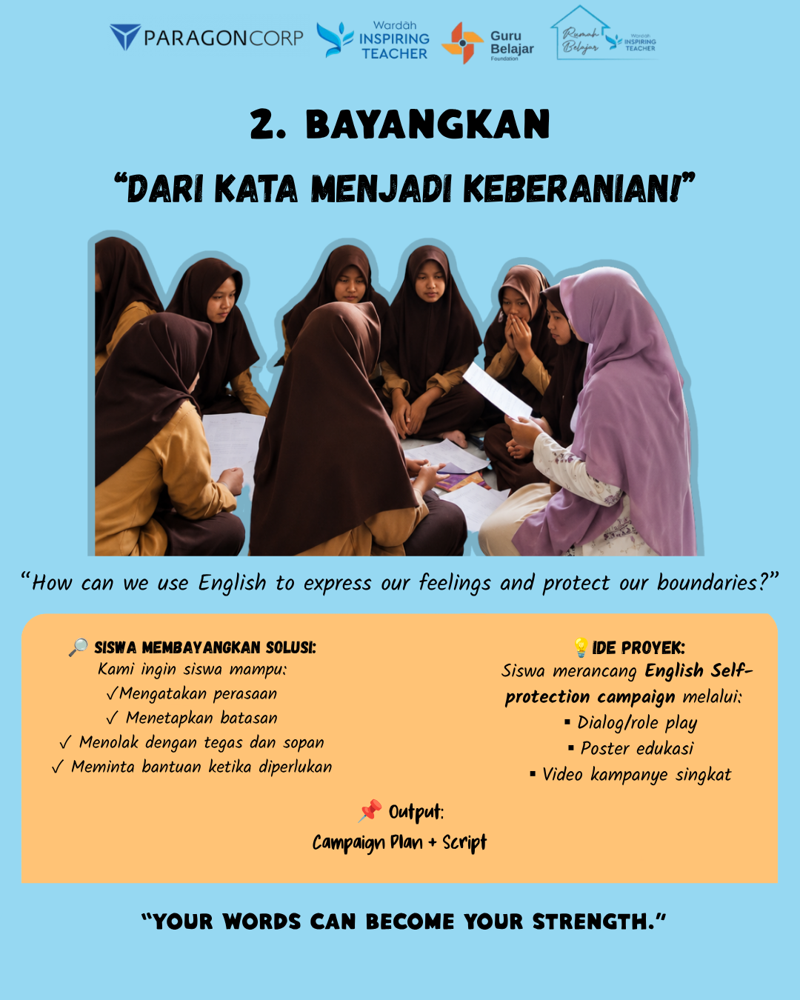
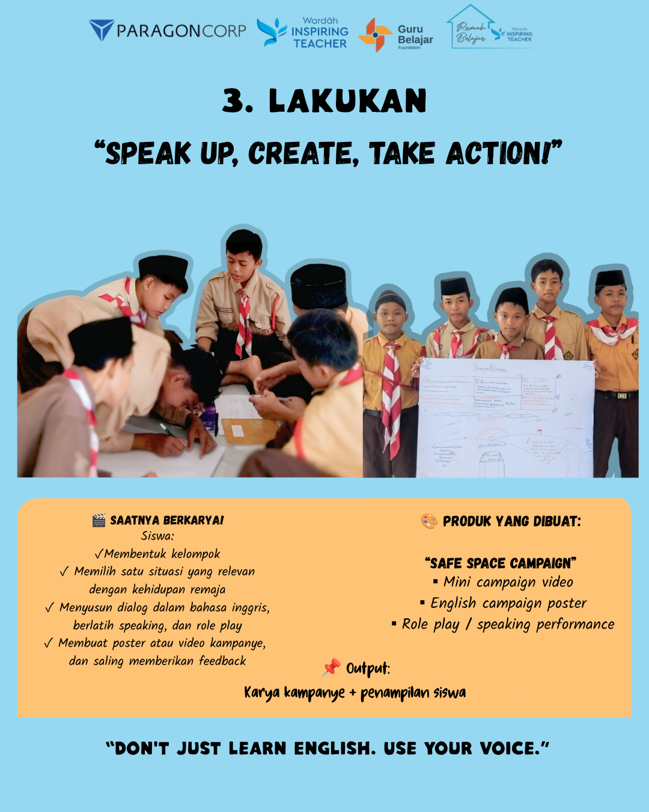
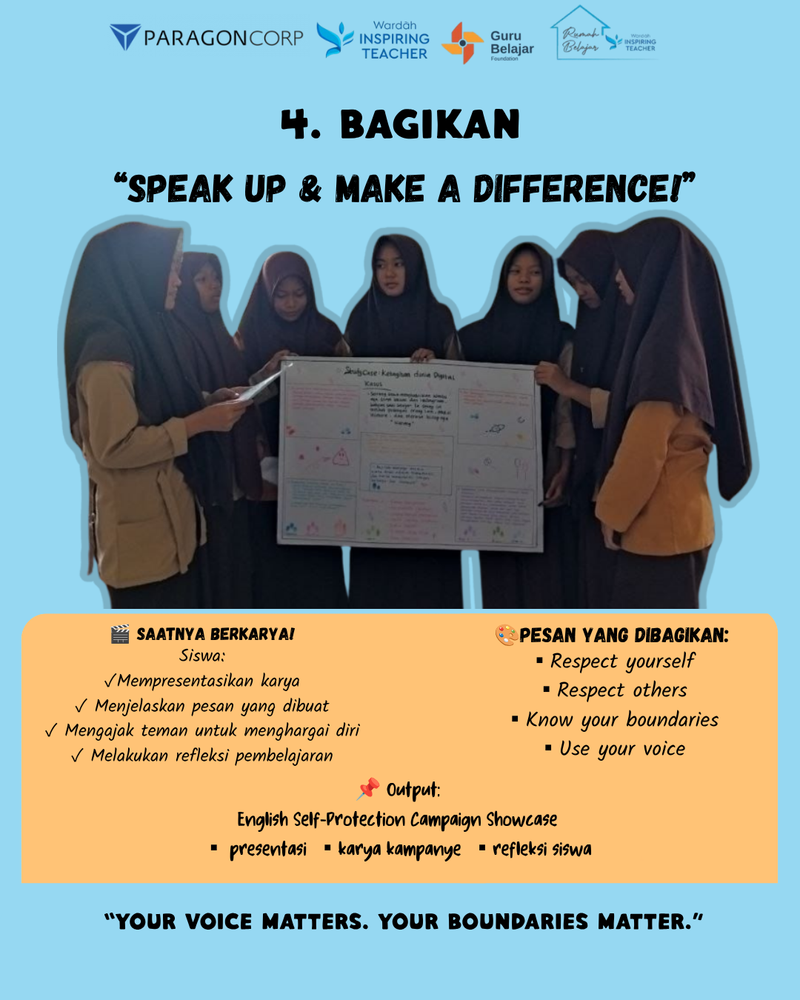

English for Self-Protection Awareness
This project was developed as part of the Wardah Inspiring Teacher program. It integrated English learning with self-protection awareness, encouraging students to express their feelings, communicate their boundaries, and respond to uncomfortable situations with confidence and respect.
Rather than learning English only through conventional classroom activities, students were invited to use English as a practical tool for communication and self-expression.
Students worked collaboratively to create a campaign that connected English communication skills with everyday situations involving feelings, personal boundaries, respect, and asking for help.
Students explored simple situations that could make teenagers feel uncomfortable. Through discussion and reflection, they identified challenges such as difficulty expressing feelings, fear of saying "no", peer pressure, and lack of confidence when asking for help.
The students also developed a vocabulary bank related to feelings, boundaries, and asking for help.
Students imagined possible solutions to the situations they had identified. They discussed how English could help them communicate their feelings, establish boundaries, refuse inappropriate requests, and seek support.
They then planned an English self-protection campaign through dialogue, role play, educational posters, and short campaign videos.
Students formed groups and selected situations that were relevant to their lives. They developed English dialogues, practiced speaking, performed role plays, and created campaign materials.
The learning process emphasized collaboration, communication, creativity, and peer feedback.
The students presented their campaign messages and shared what they had learned. Their work became a space to communicate messages about respecting oneself, respecting others, knowing personal boundaries, and using one's voice.




Through the project, students reflected on their experiences using English to express feelings, communicate opinions, and recognize and respect personal boundaries.
They learned that communication is not only about using language correctly. It is also about having the courage to express what they feel, communicating appropriately, and respecting other people.
This project reminded me that language learning becomes more meaningful when students can connect it with situations in their own lives.
As a teacher, I wanted the classroom to become more than a place where students practiced grammar and vocabulary. I wanted English to become something they could actually use to communicate, participate, and express themselves.
The project also taught me that giving students a voice means giving them opportunities to make choices, create something of their own, and share their perspectives.